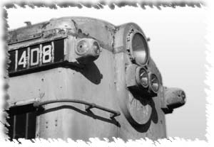

This is a listing of diesel locomotives in chronological order as they were produced up until 1989. Some of the information in Pinkepank's Diesel Spotters Guides has been included for reference. If you have additional data for new units or there are discrepancies, send me the info and I will update the listing.For information on units still existing and current rosters of the major railroads, see Andrew Toppan's Motive Power Rosters.
Manufacturer Locomotive Type Model Start Date End Date No. Built GE Boxcab Jay St Connecting Oct.18 Oct.18 1 ALCO Boxcab 60ton Jan.24 Dec.28 26 ALCO Boxcab 100ton Jan.25 Dec.28 7 Baldwin Boxcab 1000hp A1A Jun.25 Jun.25 1 ALCO NYC Experimentals - Jan.28 Dec.41 7 GE demo 60ton Jan.28 Dec.28 1 GE Boxcab Road Switcher 60ton Jan.28 Dec.30 2 GE Boxcab Road Switcher 100ton Jan.28 Dec.30 11 Baldwin Boxcab 1000hp B+B May.29 May.29 1 Baldwin Road Switcher 660hp Jun.29 Jun.29 1 GE Boxcab Road Switcher - Jan.30 Dec.30 45 ALCO Road Switcher 57ton Jan.31 Jan.35 7 ALCO Road Switcher 0900 Jan.31 Jan.31 1 ALCO Road Switcher HH600 Jan.31 Jan.39 78 GE Boxcab Road Switcher 100ton Jan.31 Dec.31 1 GE Road Switcher 60ton Jan.31 Dec.31 7 ALCO Boxcab Jay St Connecting May.31 May.31 1 GE Road Switcher - Jan.33 Dec.35 7 EMD City of Salina M-10000 Feb.34 Feb.34 1 EMD Zephyr 9900 Apr.34 Apr.34 1 EMD UP articulated M-10001 Oct.34 Oct.34 1 ALCO Rebel Cars GM&N 352-354 Jan.35 Dec.37 3 EMD Road Switcher SC Feb.35 Mar.35 2 EMD Flying Yankee 6000 Feb.35 Feb.35 1 EMD Road Switcher NC Mar.35 Mar.35 1 EMD Sam Houston Twin Zephyr 9901 Apr.35 Apr.35 1 EMD Ozark State Twin Zephyr 9902 Apr.35 Apr.35 1 EMD Mark Twain Zephyr 9903 Apr.35 Apr.35 1 EMD Passenger 511,2 May.35 May.35 1 EMD Passenger 50 Aug.35 Aug.35 1 EMD Passenger 1,1A Sep.35 Sep.35 1 GE Road Switcher Y Jan.36 Dec.36 10 GE Transfer IC9200/1 Jan.36 Dec.36 2 EMD Green Diamond 121 Mar.36 Mar.36 1 EMD SAL 2207/8 Apr.36 Apr.36 1 EMD Road Switcher SC May.36 Jan.39 42 EMD Transfer T May.36 May.36 1 EMD UP articulated M-10002 May.36 May.36 1 EMD UP articulated M-10003-7 May.36 Aug.36 1 EMD Passenger 9906A/B Oct.36 Oct.36 1 EMD Passenger 9907A/B Oct.36 Oct.36 1 EMD Passenger 9904,5 Nov.36 Nov.36 1 EMD Road Switcher SW Dec.36 Jan.39 77 ALCO Road Switcher HH900 Jan.37 Jan.39 21 GE Road Switcher - Jan.37 Dec.40 9 EMD Road Switcher NC1 Mar.37 Mar.37 5 Baldwin Boxcab 660hp Apr.37 Apr.37 1 Baldwin Boxcab 900hp May.37 May.37 3 EMD Road Switcher NC May.37 Jan.38 5 EMD Passenger EA May.37 Jun.38 6 EMD Passenger EB May.37 Jun.38 6 EMD Passenger E1A Jun.37 Apr.38 8 EMD Passenger E1B Jun.37 Apr.38 3 EMD Passenger E2A Jul.37 Dec.37 2 EMD Passenger E2B Jul.37 Dec.37 4 EMD Road Switcher NC2 Jul.37 Jul.37 2 EMD RI articulated 601-606 Aug.37 Oct.37 1 EMD Road Switcher NW Sep.37 Dec.38 8 EMD Road Switcher NW1 Nov.37 Jan.39 27 EMD Road Switcher NW4 Aug.38 Aug.38 2 EMD Passenger E4A Oct.38 Dec.39 14 EMD Passenger E4B Oct.38 Dec.39 5 EMD Road Switcher NW1A Dec.38 Dec.38 3 ALCO Road Switcher HH660 Jan.39 Dec.40 43 ALCO Road Switcher HH1000 Jan.39 Dec.40 34 Baldwin Road Switcher VO660 Jan.39 Dec.46 142 Baldwin Road Switcher VO1000 Jan.39 Dec.46 548 EMD Road Switcher SW1 Jan.39 Nov.53 661 Fairbanks Morse Railcars Southern Railcars Jan.39 Dec.39 6 Fairbanks Morse Experimental Road Switcher Reading 97 Jan.39 Dec.39 1 GE Road Switcher 126ton Jan.39 Dec.40 4 GE Steam Turbine - Jan.39 Jan.39 2 EMD Road Switcher NW2 Feb.39 Dec.49 1143 EMD Passenger E3A Mar.39 Jun.40 16 EMD Passenger E3B Mar.39 Sep.39 2 EMD General Pershing Zephyr 9908 Apr.39 Apr.39 1 EMD Road Switcher NW3 Nov.39 Mar.42 7 EMD Cab FTA Nov.39 Nov.45 555 EMD Cab FTB Nov.39 Nov.45 541 EMD Passenger E6A Nov.39 Sep.42 92 ALCO Passenger DL-109 Jan.40 Apr.45 74 GE Road Switcher 44ton Jan.40 Dec.56 348 EMD Passenger E5A Feb.40 Jun.41 11 EMD Passenger E5B Feb.40 Mar.40 5 ALCO Road Switcher S-1 Apr.40 Jun.50 540 ALCO Road Switcher S-2 Apr.40 Jun.50 1502 EMD Passenger E6B Apr.40 Feb.42 26 GE Road Switcher 100ton Jan.41 Dec.41 2 ALCO Passenger DL-110 Feb.41 Aug.42 4 ALCO Lt Road Switcher RS-1 Mar.41 Mar.60 417 EMD Transfer TR1 Apr.41 May.41 4 ALCO Lt Road Switcher RSD-1 Nov.42 May.46 150 Baldwin Centipede - Jan.43 Dec.43 1 GE Road Switcher 128ton Jan.43 Dec.45 3 Fairbanks Morse Road Switcher H-10-44 Jan.44 Dec.49 197 Baldwin Cab (Babyface Centipede) DR-12-8-1500/2 Jan.45 Dec.48 54 Baldwin Cab (A1A Sharks) DR-6-4-20 Jan.45 Dec.48 29 Fairbanks Morse Road Freight/Passenger (Erie) A Erie Jan.45 Dec.49 83 Fairbanks Morse Road Freight/Passenger (Erie) B Erie Jan.45 Dec.49 28 EMD Passenger E7A Feb.45 Apr.49 428 EMD Passenger E7B Feb.45 Apr.49 82 EMD Cab F3A Jul.45 Feb.49 1111 EMD Cab F3B Jul.45 Feb.49 696 ALCO Cab Black Mariah Aug.45 Aug.45 3 ALCO Cab FA-1 Jan.46 Oct.50 433 ALCO Cab FB-1 Jan.46 Oct.50 249 Baldwin Road Switcher DS-4-4-6 Jan.46 Dec.49 139 Baldwin Road Switcher DS-4-4-10 Jan.46 Dec.51 502 Baldwin Road Switcher DRS-6-4-15 Jan.46 Dec.52 29 Baldwin Transfer DT-6-6-20 Jan.46 Jan.50 46 Baldwin Passenger Steam Turbine C&O 500-502 Jan.46 Dec.47 3 GE Road Switcher 70ton Jan.46 Dec.58 238 EMD Cab F2A Jul.46 Nov.46 74 EMD Cab F2B Jul.46 Nov.46 30 ALCO Passenger PA-1 Sep.46 Jun.50 170 ALCO Passenger PB-1 Sep.46 Aug.49 40 ALCO Road Switcher RS-2 Oct.46 May.50 383 ALCO Road Switcher RSC-2 Oct.46 Apr.50 70 EMD Road Switcher NW5 Dec.46 Feb.47 13 ALCO Cab/Alaska RSD-1 Jan.47 Dec.49 18 Baldwin Road Switcher DRS-4-4-15 Jan.47 Dec.50 32 Baldwin Cab (Babyface A1A) DR-6-4-15 Jan.47 Dec.48 7 Baldwin Cab DR-6-4-15B Jan.47 Dec.48 2 Baldwin Cab (Babyface B-B) DR-4-4-15 Jan.47 Dec.50 58 Baldwin Cab DR-4-4-15B Jan.47 Dec.50 47 Fairbanks Morse Road Switcher H-15-44 Jan.47 Dec.49 30 Fairbanks Morse Road Switcher H-20-44 Jan.47 Dec.54 96 Baldwin Lt Road Switcher DRS-4-4-10 Jan.48 Dec.50 22 Baldwin Road Switcher DRS-6-6-15 Jan.48 Dec.50 82 Baldwin Cab DR-6-4-20B Jan.48 Dec.48 9 Baldwin Cab DR-6-2-10 Jan.48 Dec.48 1 GE Gas Turbine UP50 Jan.48 Dec.48 1 EMD Branchline BL1 Feb.48 Feb.48 1 EMD Branchline BL2 Apr.48 May.49 58 Baldwin Road Switcher DS-4-4-7.5 Jan.49 Dec.51 53 GE Road Switcher 95ton Jan.49 Dec.56 47 EMD Cab F7A Feb.49 Dec.53 2366 EMD Cab F7B Feb.49 Dec.53 1483 Lima Road Switcher 1000hp May.49 Mar.50 38 EMD Cab FP7 Jun.49 Dec.53 376 EMD Cow,Calf TR2 Jul.49 Jul.49 39 EMD Cow,Calf TR3 Jul.49 Jul.49 2 EMD Passenger E8A Aug.49 Dec.53 421 EMD Road Switcher SW7 Oct.49 Jan.51 493 EMD Road Switcher GP7 Oct.49 May.54 2724 Lima Road Switcher 750hp Nov.49 Jun.51 6 EMD Passenger E8B Dec.49 May.53 39 Baldwin Road Switcher S-8 Jan.50 Dec.54 61 Baldwin Road Switcher AS-16 Jan.50 Dec.55 127 Baldwin Road Switcher AS-416 Jan.50 Dec.53 21 Baldwin Road Switcher AS-616 Jan.50 Dec.54 168 Baldwin Road Switcher DRS-6-6-15B Jan.50 Dec.53 109 Baldwin Cab (Babyface & Shark B-B) RF-16B Jan.50 Dec.53 51 Fairbanks Morse Road Switcher H-12-44 Jan.50 Dec.61 335 Fairbanks Morse Road Switcher H-16-44 Jan.50 Dec.63 357 Fairbanks Morse Cab (C-Liners) CFA-16-4 Jan.50 Dec.53 65 Fairbanks Morse Cab (C-Liners) CFB-16-4 Jan.50 Dec.53 25 Fairbanks Morse Cab (C-Liners) CFA-20-4 Jan.50 Dec.53 12 Fairbanks Morse Cab (C-Liners) CFB-20-4 Jan.50 Dec.53 3 Fairbanks Morse Cab (C-Liners) CPA-20-5 Jan.50 Dec.53 8 Fairbanks Morse Cab (C-Liners) CPA-24-5 Jan.50 Dec.53 22 ALCO Road Switcher S-3 Mar.50 Nov.53 292 ALCO Passenger PA-2 Apr.50 May.52 28 Lima Road Switcher 1200hp Apr.50 May.51 69 ALCO Road Switcher RS-3 May.50 Aug.56 1370 Lima Transfer 2500hp May.50 Sep.51 22 ALCO Road Switcher S-4 Aug.50 Jan.61 797 ALCO Passenger PB-2 Aug.50 Sep.50 2 Lima Lt Road Switcher 1200hp Aug.50 Oct.50 16 EMD Road Switcher SW8 Sep.50 Jan.54 371 Lima Road Switcher 800hp Sep.50 Jun.51 23 ALCO Cab FA-2, FPA-2 Oct.50 Jun.56 395 ALCO Cab FB-2, FPB-2 Oct.50 Jun.56 227 ALCO Road Switcher MLW RSC-3 Nov.50 Jun.52 19 Baldwin Road Switcher S-12 Jan.51 Dec.56 451 Baldwin Cow, Calf Road Switcher S-8 Jan.51 Dec.52 9 Baldwin Lt Road Switcher RS-12 Jan.51 Dec.56 46 Baldwin Road Switcher AS-616B Jan.51 Dec.51 7 Baldwin Transfer RT-624 Jan.51 Dec.54 24 Fairbanks Morse Lt Road Switcher H-12-46 Jan.51 Dec.53 30 Fairbanks Morse Road Switcher(Baby Train Master) H-16-66 Jan.51 Dec.58 58 Fairbanks Morse Cab (C-Liners) CPA-16-4 Jan.51 Dec.54 10 EMD Road Switcher SW9 Feb.51 Dec.53 815 ALCO Road Switcher RSD-4 Mar.51 Aug.52 36 EMD Military MRS-1 Jan.52 Dec.52 13 Fairbanks Morse Cab (C-Liners) CPB-16-4 Jan.52 Dec.54 8 GE Gas Turbine UP51-60 Jan.52 Dec.52 10 EMD Road Switcher SD7 Feb.52 Nov.53 188 ALCO Road Switcher RSD-5 Mar.52 Mar.56 204 ALCO Passenger PA-3 Apr.52 Dec.53 49 ALCO Passenger PB-3 Apr.52 Jun.53 5 Fairbanks Morse Road Switcher (Train Master) H-24-66 Jan.53 Dec.56 127 ALCO Military MRS-1 Mar.53 Oct.53 83 EMD Road Switcher GP7B Mar.53 Apr.53 5 ALCO Road Switcher RSD-7 Jan.54 Jan.56 17 EMD Road Switcher SW900 Jan.54 Nov.65 357 EMD Road Switcher SW1200 Jan.54 May.66 1024 EMD Road Switcher GP9 Jan.54 Dec.59 4092 EMD Road Switcher SD9 Jan.54 Jun.59 471 EMD Cab F9A Jan.54 Dec.56 87 EMD Cab F9B Jan.54 Apr.57 154 EMD Cab FP9 Jan.54 Dec.59 79 Fairbanks Morse Cab (C-Liners) CPA-16-5 Jan.54 Dec.55 6 Fairbanks Morse Cab (C-Liners) CPB-16-5 Jan.54 Dec.55 6 GE Cab/Experimental UM20B Jan.54 Dec.54 1 GE Gas Turbine Veranda UP61-75 Jan.54 Dec.54 15 EMD Road Switcher SW600 Feb.54 Jan.62 15 EMD Road Switcher GP9B Feb.54 Dec.59 165 Baldwin Freight Steam Turbine Jawn Henry May.54 May.54 1 EMD Passenger E9A May.54 Dec.63 100 EMD Passenger E9B May.54 Dec.63 44 ALCO Road Switcher S-5 Jun.54 Jun.54 7 ALCO Road Switcher MLW RS-10 Dec.54 Feb.57 128 ALCO Road Switcher S-6 May.55 Dec.60 126 ALCO Lt Road Switcher MLW RSC-13 Jun.55 Nov.57 35 EMD Road Switcher GP20 Omaha Sep.55 Oct.65 66 Baldwin Cab X Train Jan.56 Dec.57 3 EMD Aerotrain LWT12 Jan.56 Dec.56 3 Fairbanks Morse Road Switcher H-12-44TS Jan.56 Dec.56 3 GE Road Switcher UD18 Jan.56 Dec.56 10 ALCO Road Switcher RS-11 Feb.56 May.61 426 ALCO Road Switcher RSD-15 Feb.56 Jun.60 87 ALCO Road Switcher RSD-12 Apr.56 Mar.63 161 EMD 3rd rail FL9 Oct.56 Nov.57 30 ALCO Road Switcher MLW RS-18 Dec.56 Jun.68 351 Fairbanks Morse ACF Lightweight Talgo Train P-12-42 Jan.57 Dec.58 4 ALCO Road Switcher MLW RSD-17 May.57 May.57 1 ALCO Switcher MLW S-7 Jun.57 Aug.57 29 ALCO Switcher MLW S-10 Jan.58 Jun.58 13 EMD Switcher GMD1 Jan.58 Dec.60 101 GE Gas Turbine UP1-30 Jan.58 Dec.61 30 ALCO Switcher T-6 Mar.58 Jan.69 55 ALCO Switcher MLW S-12 May.58 Aug.58 11 EMD Road Switcher SD24 Jul.58 Mar.63 179 ALCO Cab FPA-4 Oct.58 May.59 36 ALCO Cab FPB-4 Oct.58 Mar.59 14 ALCO Switcher MLW S-13 Jan.59 Jul.67 56 EMD Road Switcher GP20 Omaha Mar.59 Jun.59 9 ALCO Lt Road Switcher MLW RSC-24 Apr.59 May.59 4 GE Road Switcher U25B Apr.59 Feb.66 478 ALCO Switcher MLW S-11 Jun.59 Jul.59 10 EMD Road Switcher SD24B Jul.59 Sep.59 45 ALCO Lt Road Switcher MLW RS-23 Aug.59 Jul.66 40 EMD Road Switcher GP20 Nov.59 Apr.62 260 ALCO Road Switcher RS-27 Dec.59 Oct.62 27 EMD Road Switcher GP18 Dec.59 Nov.63 390 EMD Road Switcher SD18 Apr.60 Mar.63 54 EMD 3rd rail FL9 Jun.60 Nov.60 30 EMD Road Switcher RS1325 Oct.60 Oct.60 2 Krauss-Maffei Cab (Diesel Hydraulic) 4000hp Jan.61 Dec.63 21 ALCO Road Switcher RS-32 Jun.61 Jun.62 35 EMD Road Switcher GP30 Jul.61 Nov.63 908 UP Gas Turbine UP80 Jan.62 Dec.62 1 ALCO Road Switcher RS-36 Feb.62 Aug.63 40 ALCO Road Switcher C-424 Apr.63 May.67 190 EMD Road Switcher GP30B Apr.63 Jul.63 40 ALCO Road Switcher C-420 Jun.63 Aug.68 131 EMD Road Switcher DD35B Sep.63 Sep.64 30 GE Road Switcher U25C Sep.63 Dec.65 113 GE Road Switcher U50 Sep.63 Aug.65 26 EMD Road Switcher GP35 Oct.63 Jan.66 1313 ALCO Road Switcher C-628 Dec.63 Dec.68 181 EMD Road Switcher GP28 Mar.64 Nov.65 26 ALCO Road Switcher C-855 Jun.64 Jun.64 2 ALCO Road Switcher C-855B Jun.64 Jun.64 1 EMD Road Switcher SD35 Jun.64 Jan.66 360 EMD Road Switcher SDP35 Jul.64 Sep.65 35 ALCO Road Switcher DH-643 Sep.64 Sep.64 3 ALCO Road Switcher C-425 Oct.64 Dec.66 91 EMD Road Switcher SD45 Feb.65 Dec.71 1260 EMD Road Switcher SD45 Feb.65 Dec.71 1260 EMD Road Switcher DD35A Apr.65 May.65 15 ALCO Road Switcher C-630 Jul.65 Oct.67 133 EMD Road Switcher SD28 Jul.65 Sep.65 6 EMD Road Switcher GP40 Nov.65 Dec.71 1243 EMD Road Switcher GP40 Nov.65 Dec.71 1243 GE Road Switcher U28C Dec.65 Dec.66 71 EMD Road Switcher GP38 Jan.66 Dec.71 731 EMD Road Switcher SD40 Jan.66 Dec.71 1275 EMD Road Switcher GP38 Jan.66 Dec.71 493 EMD Road Switcher SD40 Jan.66 Jul.72 1257 GE Road Switcher U28B Jan.66 Dec.66 148 ALCO Center Cab C-415 Apr.66 Dec.68 26 EMD Road Switcher SW1000 Jun.66 Oct.72 118 EMD Road Switcher SDP40 Jun.66 May.70 20 EMD Road Switcher SDP40 Jun.66 May.70 20 ALCO Road Switcher C-430 Jul.66 Feb.68 16 EMD Switcher SW1500 Jul.66 Jan.74 807 EMD Switcher SW1001 Sep.66 Jun.86 174 EMD Road Switcher GP40TC Nov.66 Dec.66 8 GE Road Switcher U30B Dec.66 Mar.75 291 EMD Cowl FP45 Jan.67 Dec.68 14 GE Road Switcher U30C Jan.67 Sep.76 600 EMD Road Switcher SD38 May.67 Oct.71 53 EMD Road Switcher SDP45 May.67 Aug.70 52 EMD Road Switcher SD38 May.67 Jul.71 38 EMD Road Switcher SDP45 May.67 Aug.70 52 GE Road Switcher U33B Sep.67 Aug.70 137 GE Cowl U30CG Nov.67 Nov.67 6 ALCO Road Switcher C-636 Dec.67 Nov.68 34 EMD Cowl FP45 Dec.67 Dec.68 14 EMD Cowl F45 Jan.68 Dec.71 86 GE Road Switcher U33C Jan.68 Jan.75 375 GE Road Switcher U23C Mar.68 Jan.76 51 EMD Cowl F45 Jun.68 May.71 86 EMD Road Switcher SD39 Aug.68 May.70 54 EMD Road Switcher SD39 Aug.68 May.70 54 GE Road Switcher U23B Aug.68 Jun.77 465 EMD Road Switcher GP40P Dec.68 Dec.68 13 EMD Road Switcher GP39 Jan.69 Dec.70 23 GE Road Switcher U36B Jan.69 Dec.74 125 EMD Road Switcher SDL39 Mar.69 Nov.72 10 EMD Road Switcher SDL39 Mar.69 Nov.72 10 EMD Road Switcher DDA40 Apr.69 Sep.71 47 ALCO Export DL-535, 535E May.69 Dec.71 15 EMD Road Switcher GP39 May.69 Jul.70 21 EMD Road Switcher SD40A Aug.69 Jan.70 18 GE Road Switcher U50C Sep.69 . . ALCO Road Switcher MLW M-630 Nov.69 . . ALCO Road Switcher MLW M-636 Nov.69 . . Montreal Loco Wks Road Switcher M630 Nov.69 Nov.73 75 Montreal Loco Wks Road Switcher M636 Nov.69 Apr.75 111 EMD Road Switcher SD45X Jan.70 Dec.71 7 ATSF Road Switcher (rebuilt F7) CF7 Feb.70 Mar.78 233 EMD Road Switcher GP39DC Jun.70 Jun.70 2 EMD Road Switcher SD45X Jun.70 Feb.71 7 GE Road Switcher U34CH Nov.70 Jan.73 32 EMD Road Switcher GP38AC Jan.71 Dec.71 240 ALCO Road Switcher MLW M640 Feb.71 . . Montreal Loco Wks Road Switcher M640 Feb.71 Feb.71 1 EMD Road Switcher SD38AC Jun.71 Oct.71 15 GE Road Switcher U36C Nov.71 Apr.75 218 EMD Road Switcher GP38-2 Jan.72 . . EMD Road Switcher GP40-2 Jan.72 . . EMD Road Switcher SD38-2 Jan.72 . . EMD Road Switcher SD40-2 Jan.72 . . EMD Road Switcher SD45-2 Jan.72 . . EMD Road Switcher GP38-2 Jan.72 . . EMD Road Switcher SD40-2 Jan.72 Feb.86 3957 EMD Road Switcher SD45T-2 Feb.72 Jun.75 247 ALCO Road Switcher/Transfer M-420TR Apr.72 . . EMD Road Switcher GP40-2 Apr.72 Nov.86 1131 Montreal Loco Wks Switcher M420TR Apr.72 Apr.72 2 EMD Road Switcher SD45-2 May.72 Sep.74 136 EMD Road Switcher SD38-2 Nov.72 Jun.79 81 EMD Cowl SDP40F Jan.73 . . GE Road Switcher U18B Mar.73 Oct.76 163 EMD Switcher SW1504 May.73 Aug.73 60 Montreal Loco Wks Road Switcher M420 May.73 Feb.77 92 EMD Cowl SDP40F Jun.73 Aug.74 150 EMD Switcher MP15DC Feb.74 Nov.80 246 Montreal Loco Wks Road Switcher M420R Feb.74 May.75 5 EMD Cowl F40C Mar.74 May.74 15 GE Road Switcher U36CG Apr.74 May.74 20 EMD Road Switcher SD40T-2 Jun.74 Jul.80 310 EMD Road Switcher GP39-2 Aug.74 Dec.87 249 GE Switcher SL110 Aug.74 . 30 EMD Road Switcher GP40P-2 Nov.74 Nov.74 3 EMD Road Switcher GP38P-2 Jun.75 Jun.75 20 Montreal Loco Wks Road Switcher M420B Jun.75 Jul.75 8 Montreal Loco Wks Switcher M420TR-2 Jul.75 Jul.75 15 EMD Switcher MP15AC Aug.75 Aug.84 255 GE Cowl P30CH Aug.75 Jan.76 25 GE Switcher SL144 Dec.75 . 16 EMD Cowl F40PH Mar.76 Jan.88 284 EMD Lt Road Switcher GP15-1 Jun.76 Mar.82 310 GE Road Switcher C30-7 Sep.76 Feb.85 1137 GE Switcher SL80 Nov.76 . 5 GE Road Switcher B23-7 Sep.77 Dec.84 536 EMD Road Switcher GP40X Dec.77 Jun.78 23 GE Road Switcher B30-7 Dec.77 May.81 199 EMD Road Switcher SD402-SS Mar.78 Apr.78 5 GE Road Switcher C36-7 Jun.78 Dec.85 169 GE Road Switcher BQ23-7 Oct.78 Jan.79 10 EMD Road Switcher SD40X Sep.79 Sep.79 4 EMD Road Switcher GP50 May.80 Nov.85 278 GE Road Switcher B30-7A Jun.80 Feb.82 58 EMD Road Switcher GP39X Nov.80 Nov.80 6 GE Road Switcher B36-7 Nov.80 Sep.85 222 EMD Road Switcher SD50S Dec.80 Dec.80 6 EMD Road Switcher SD50 May.81 Jul.84 230 Montreal Loco Wks Road Switcher HR412 Sep.81 Nov.81 11 Montreal Loco Wks Road Switcher HR616 Feb.82 Aug.82 20 GE Road Switcher B30-7A1 Apr.82 May.82 22 GE Road Switcher B30-7A(B) Jun.82 Oct.83 120 EMD Lt Road Switcher GP15T Oct.82 Apr.83 28 GE Road Switcher B36-8 Oct.82 Oct.82 1 EMD Lt Road Switcher GP15AC Nov.82 Dec.82 30 GE Road Switcher C39-8 Mar.83 Dec.87 162 EMD Road Switcher GP49 Aug.83 May.85 9 GE Road Switcher B32-8 Jan.84 Jan.84 3 GE Road Switcher B39-8 Jan.84 Feb.88 143 GE Road Switcher C30-7A May.84 Jun.84 50 GE Road Switcher C32-8 Sep.84 . 10 EMD Switcher MP15T Oct.84 Nov.87 42 EMD Road Switcher SD50 Nov.84 May.85 131 EMD Cowl F40PH-2 Mar.85 . 91 EMD Road Switcher SD50F Apr.85 Jul.87 60 ATSF Road Switcher (rebuilt U36C) SF30C May.85 Jun.87 70 EMD Road Switcher GP59 Jun.85 . 3 EMD Road Switcher GP60 Oct.85 . . ATSF Road Switcher (rebuilt SD45-2) SD CAT Jul.87 Jul.87 1 EMD Cowl F40PH-2C Jul.87 May.88 26 GE Road Switcher Dash8-40C Dec.87 . 130 GE Road Switcher Dash8-40B May.88 . 89 EMD Road Switcher SD40F Sep.88 . 25 BN Road Switcher (rebuilt GP30) GP39M Nov.88 Jun.89 13 BN Road Switcher (rebuilt GP40) GP40M Nov.88 Jun.89 9 EMD Road Switcher SD60M Jan.89 . .
If you have comments, suggestions on what you would like to see
or data you might like, you can email me at:
Rick Blanchard - rick@urbaneagle.com


--Back to da data.--